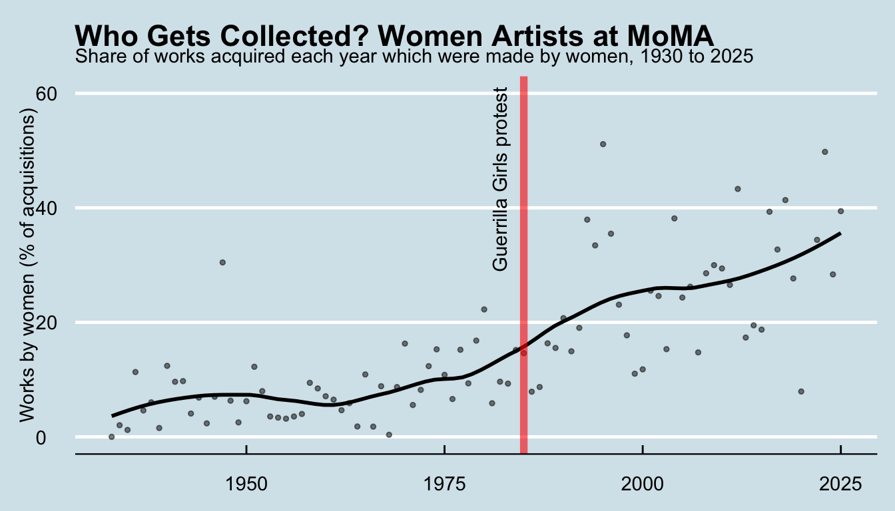
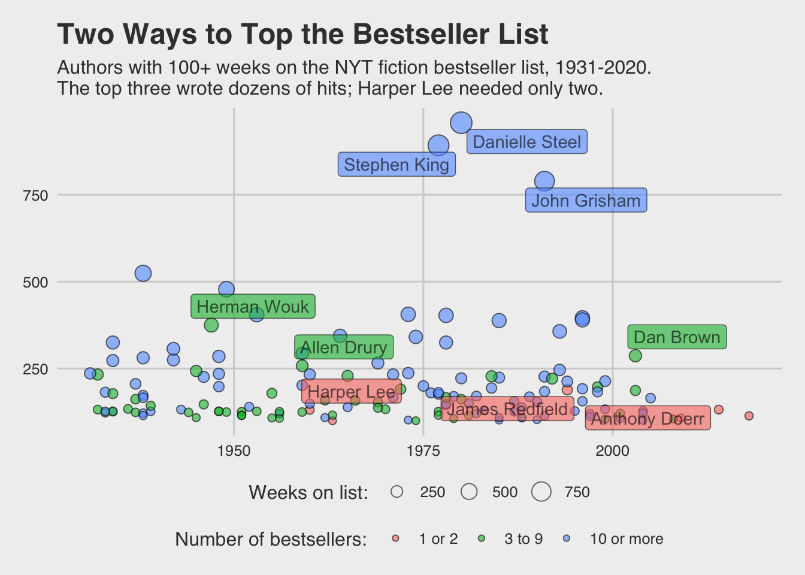

Welcome! You’re probably here because you are taking the course Cultural Analytics, at Leiden University. It’s part of the minor Digital Humanities and Cultural Analytics.
The course instructor is Dr. Yann Ryan.
This e-book will serve as the course website. The menu on the left side lists the chapters, grouped into one section for each class - two per week. Each section ends with any home exercises to do before the next class. At the bottom of the menu you’ll find useful information, including suggested datasets for your reports, and how to prepare for the exam. The menu on the right contains the table of contents for this particular chapter, so you can skip to different sections. There’s a search function just below the title on the left, which students have found very useful when they want to find some code we’ve discussed and use it later on in an assignment.
You’ll also need to familiarise yourself with the course Brightspace area, where I’ll put further information and you’ll submit assignments.
What is Cultural Analytics?
Cultural analytics is the use of digital, computational techniques to find, analyse, and understand cultural material - the kinds of data produced by or about culture, and the people who make and consume it.
That covers a lot of ground. Cultural data comes in many forms: the text of novels, digitised newspapers, images and film, audio, and - the focus of this course - structured, tabular data: the kind of data you’d find in a spreadsheet, with rows and columns. Think of a museum’s collection database, a streaming platform’s play-count records, a historical census, or a table of shipping records. If you’re also taking a course on computational text or image analysis, that’s cultural analytics too - just applied to unstructured material rather than tables. This course is deliberately narrower and more hands-on: everything we do here starts from data you could open in a spreadsheet.
Within that scope, this course is centred on one core technique: data visualisation - the graphical representation of information and data. It’s one of the most direct ways to explore, analyse, and communicate what a structured dataset can tell us, and it’s been part of how people make sense of information since at least the eighteenth century (with maps going back much further still). Today we come across data visualisations everywhere: in scientific articles, news media, advertisements, and increasingly in the humanities and cultural sector - museums visualising their collections, cultural institutions mapping historical migration, streaming platforms illustrating listening habits.
In the humanities, the structured data we use might be, for example, historical statistics or networks, or metadata about text, images, or objects (rather than the text or images themselves). It might be something totally different such as streaming or listening data, or geographic and spatial data.
Course Aims and Objectives
At the end of this course, you will:
Be able to construct data visualisations from scratch using the coding language R.
Use online publication formats such as Markdown to make professional-standard visual essays containing code, visualisations, and explanatory text.
Understand how a FAIR (Findable, Accessible, Interoperable, and Reusable) approach to data is important for your work and that of others.
Be able to critically reflect on a range of visualisations, with a specific focus on network and spatial data.
Know where to find some of the inspiring visualisations, thinkers, and designers in this field.
Be able to discuss your views on information visualisation with peers as well as give and receive feedback.
In terms of concrete skills, by the end of this course, you should be able to use humanities-focused data to make informative, highly-customised visualisations such as this:
Show the code
library(tidyverse)library(ggthemes)# Summarised from the MoMA collection data: https://github.com/MuseumofModernArt/collectiondf =read_csv('moma_acquisitions_gender.csv')df = df %>%filter(works >=50) %>%mutate(share_women = works_by_women / works *100)p1 =ggplot() +geom_point(data = df, aes(year, share_women), size =1, alpha = .5) +geom_smooth(data = df, aes(year, share_women), method ="loess", span = .5,se =FALSE, color ='black', alpha = .75) +scale_y_continuous(limits =c(0, 60)) +labs(title ='Who Gets Collected? Women Artists at MoMA', subtitle ="Share of works acquired each year which were made by women, 1930 to 2025", x =NULL, y ="Works by women (% of acquisitions)") +geom_vline(xintercept =1985, color ='red', alpha = .6, linewidth =2) +annotate("text", x =1982, y =45, label ="Guerrilla Girls protest", angle =90) +theme_economist()p1

or this:
Show the code
library(ggrepel)# Post45 Data Collective, via TidyTuesday: https://data.post45.org/df2 =read_csv("nyt_bestsellers.csv")df2 = df2 %>%group_by(author) %>%summarise(first_year =min(year), titles =n(), weeks =sum(total_weeks)) %>%filter(weeks >=100) %>%mutate(output =case_when(titles <=2~"1 or 2", titles <10~"3 to 9", TRUE~"10 or more"),output =fct_relevel(output, "1 or 2", "3 to 9"))top_data = df2 %>%group_by(output) %>%slice_max(order_by = weeks, n =3)p =ggplot() +geom_point(data = df2, aes(x = first_year, y = weeks, size = weeks, fill = output), pch =21, color ='black', alpha = .6, stroke = .5) +geom_label_repel(data = top_data, aes(x = first_year, y = weeks, label = author, fill = output), alpha = .6, show.legend =FALSE) +scale_size_area(max_size =6) +labs(title ="Two Ways to Top the Bestseller List", subtitle ="Authors with 100+ weeks on the NYT fiction bestseller list, 1931-2020.\nThe top three wrote dozens of hits; Harper Lee needed only two.") +theme_fivethirtyeight() +labs(y ="Total weeks on the bestseller list", size ="Weeks on list: ", fill ='Number of bestsellers: ') +theme(legend.position ='bottom', legend.box ="vertical", legend.margin =margin())p

Perhaps most importantly, you will have total control over every aspect of the visualisation, from the colours, to the titles, labels, and scales. Use the ‘show the code’ button above the visualisation to see the code it was made from.
Your most important pieces of work will be two Markdown reports: publishable documents containing code, text, and data visualisations, which show off the skills you have learned during the course.
Data, Visualised…
Most importantly, you’ll learn the basic principles of data visualisation, and put them into practice using a platform called R (more on that below). R is widely used by, for example, data journalists at the BBC, and in publications like The Economist and the Financial Times.
Using a language like R or python instead of Excel or a simple application for visualising data has many advantages. For one, it’s much easier to work with large datasets. You want to analyse a museum’s entire collection, like the 160,000 works behind the first chart above, or huge datasets of movies like these ones, with millions of rows of data? It’ll take a split second in R. A second advantage is that everything you make can be reproducible, meaning your visualisations and analyses can be scientifically checked and verified.
The visualisations above were made with a few lines of the R language. If you click the ‘Show the code’ button above them, you’ll see the code I used to create them. It might look a little complicated now, but if you follow the course, you should be able to make similar (and hopefully much nicer) ones by the end of the seven-week block.
In your assignments, you’ll combine text, data and visual outputs to make a report on a topic you’re interested in. You’ll make a document like this. For this course, it’s more than enough to stick to the basic charts like the above. But if you’re interested, you can explore fancier things such as interactive maps and charts, 3D-rendered visualisations, and more.
…and the Humanities
This is not to say the course will be an exhaustive ‘how to’ for scientific data visualisations. One of your superpowers as a humanities student is that you learn to move beyond the surface level and consider the subtexts, biases, and so forth in cultural objects. In this course, we’ll put those skills to good use, and you’ll use your own expertise and interests to tell compelling and truthful stories about humanities subjects, using data.
Just as importantly, you’ll learn how to critique data visualisations and design. As a group we’ll ask: what makes them good or bad, scientific or unethical? Can we trust the intentions behind commercial or political data visualisations? Can we spot when they are being misleading, and describe exactly how? What are the negative and positive connotations around certain graphical representations, and why do we use them? How can we make better, more ethical data visualisations? How can we make visualisations which properly consider those with accessibility needs?
A practical course
This is a ‘doing’ course: you’ll spend most of your self-study time completing at-home exercises and assignments.
Schedule
This course runs as an intensive seven-week block, meeting twice a week: a lecture on Tuesdays and a seminar on Thursdays. Because of this, the pace within each week is fast: the two sessions in a week build directly on each other, and any exercises set between them are meant to be done in the following day or two rather than over a full week.
Lectures (Hoorcollege): Tuesdays, 13:15-15:00, Johan Huizinga 0.06.
Seminars (Werkgroep): Thursdays. Group 1: 13:15-15:00, Lipsius 2.01. Group 2: 15:15-17:00, Lipsius 2.05.
Always check MyTimetable for last-minute room changes.
In the first week, you’ll learn the very basics using the coding language R and start working with dataframes. Week 2 covers the rest of data analysis. Weeks 3 and 4 are a two-week block on data visualisation, wrapping up with Report 1. Week 5 covers ethics, FAIR data and accessibility (taught through a hands-on TidyTuesday challenge), before moving into digital mapping, which runs over the last three classes and wraps up with Report 2. There are no classes in week 7, which is reserved for a hackathon (a separate event, not part of this course). The exam is in January - see Preparing for the Exam.
Course Schedule
Week
Session
Date
Topic
Assignment
1
Lecture
Tue 27 Oct
Introductions, tour of the course book, Introduction to R, R Markdown
1
Seminar
Thu 29 Oct
Data Analysis 1: dataframes, selecting and subsetting data
2
Lecture
Tue 3 Nov
Data Analysis 2: filtering, changing, summarising and grouping data
Checkpoint: Home exercise 2 due.
2
Seminar
Thu 5 Nov
Data Analysis 3: joins and tidying data, data challenge
3
Lecture
Tue 10 Nov
Data Visualisation 1: getting started with R and ggplot2
Checkpoint: Home exercise 4 due.
3
Seminar
Thu 12 Nov
Data Visualisation 2 (part 1): Gestalt principles and scales
4
Lecture
Tue 17 Nov
Data Visualisation 2 (part 2): position, date, and colour scales
4
Seminar
Thu 19 Nov
Data Visualisation 3: titles, themes, and annotations
Report 1 (data visualisation) due.
5
Lecture
Tue 24 Nov
Ethics, FAIR data, and accessibility, via the TidyTuesday challenge
5
Seminar
Thu 26 Nov
Digital Mapping 1: maps as data visualisation, your first map, projections
6
Lecture
Tue 1 Dec
Digital Mapping 2: choropleth maps, joining data to maps, reading map files
6
Seminar
Thu 3 Dec
Digital Mapping 3: points maps, finding coordinates
Report 2 (map) due.
7
8-10 Dec
No classes: hackathon week (a separate event, not part of this course)
Exam
Tue 5 Jan 2027
13:00-15:00, Universitair Sportcentrum, Hall 2
Examination
Resit
Tue 26 Jan 2027
15:00-17:00, Lipsius 1.27
Data Visualisation
Data visualisation is the main technique we’ll use to work with structured cultural data on this course. In practice, creating data visualisations involves mapping numerical data of some sort to graphical representations - often called geometries. A geometry might be the length of a line, the x and y position on a graph, or the temperature of a colour on a map. A good data visualisation will use this mapping to tell a story about the data, while representing it faithfully.
What will I actually do on this course?
You’ll put these skills into practice using a tool called R. R is a coding language often used for data science - it’s particularly good at working with what are called ‘dataframes’: structured data in the form of rows and columns which we’ll mostly be using on this course.
To begin with, you’ll practise the basics using interactive code snippets embedded directly in this book. Later, we have set up a learning environment called ‘Posit cloud’, where you can import data, export visualisations, and code in a ‘real world’ way.
Using a coding language like this allows us to have direct control over every aspect of a visualisation - we can choose from many different geometries depending on our data and what we want to show, adjust the colours in precise ways, and pick the scale we want to use. We can also use R to summarise data, or limit it to just the parts we want to work with. This will complement the learning of Python you’re doing in your other course.
In this course, you’ll learn these very practical skills. It might be hard-going or frustrating at first, but it is very worthwhile. Skills in R or any other programming language are very valuable to all sorts of employers.
At the same time, there is one important thing to note:
Your grade for any assessment will never be dependent on your coding ability.
This is not a coding course: some of you may pick it up straight away, and others may stay at a basic level throughout the course. That is completely fine. You are welcome to ask for help from me, your peers, and online. In all your assessments, I’ll take into account your understanding of data science and visualisations on a more fundamental, humanities-led level.
It’s easy to get stuck or lost in assignments. When you’re learning a new skill like coding, you can spend many hours agonising over what might turn out to be a simple problem when it’s explained to you.
The key is to stick strictly to the number of hours given to each assignment - don’t waste lots of time working out what might turn out to be a small mistake. Set a timer and stop when it runs out - make a note and we can discuss what went wrong in the next class.
Course Load
Total course load 5 EC x 28 hours = 140 hours:
Lectures and seminars: 12 x 2 (24 hours)
Home exercises (36 hours)
Reports: 2 x 25 (50 hours)
Exam preparation and exam (30 hours)
Assessment
Reports
The main assignments on this course are two reports: short visual essays, written in R Markdown, which use a dataset to explore a question you’re interested in. Each report combines explanatory text, code, and visualisations - like the examples on the data page, on a smaller scale.
Report 1: data visualisation (due Thursday 19 November). Around 1,200-1,500 words, with three or four visualisations made with ggplot2.
Report 2: map (due Thursday 3 December). Around 1,200-1,500 words, with at least two maps, plus other visualisations if you wish. You can use the same dataset as Report 1, or a new one.
In both reports, you should explain your question, where your data comes from and how it was made, what you did to it, and what your visualisations show - and reflect on the limitations of the data and your choices. See the data page for suggested datasets. Submit both the .Rmd file and the knitted html as a .zip file on Brightspace.
Home exercises and checkpoints
Each week has home exercises. Most are ungraded practice, but they’re the best way to prepare for the reports and the exam, so do them all. Two of them are checkpoints, which are submitted on Brightspace and graded pass/fail, to make sure everyone is comfortable with the basics of data analysis before starting Report 1:
You pass a checkpoint by making a genuine attempt at all of the exercises - they don’t have to be perfect.
Exam
The exam (Tuesday 5 January 2027, two hours) tests your understanding of the ideas behind the course: reading and reasoning about code, critiquing visualisations, and planning an analysis. You won’t need to use R. See Preparing for the Exam for full details and a practice exam.
Grading
Assignments: 50 percent
Report 1 (data visualisation): 20%
Report 2 (map): 25%
Checkpoints (home exercises 2 and 4, pass/fail): 5%
Participation: 10 percent
Examination: 40 percent
There is a resit for the exam (Tuesday 26 January 2027). There is no resit for the reports or checkpoints.
The Fine Print
Attendance is required. If you know you will need to miss a class, please indicate this at least two weeks prior. If you know beforehand you will have to miss three or more classes, you cannot take this course. If you miss a class due to sickness or other unforeseen circumstances, please notify me without delay.
Class participation is part of your final grade. Aside from participation being part of your grade, I really appreciate yourinput. If you think you have something to ask, please speak up: there are no stupid questions, but there are a lot of lost opportunities for information exchange and learning. This field is full of exciting new ideas and developments and it is impossible to be aware of them all. So, if you can share information on an idea, article, project, or tool that is of you value to you, please do!
If you need to speak to me, I’m happy to arrange a meeting to discuss any issues or problems you encounter on the course. Ideally, send a request a week in advance, via email.
Plagiarism: If you have not done so already, please inform yourself on Leiden University’s views and regulations on plagiarism. This Leiden university library portal has several accessible web courses on how to quote and cite right and tips for bibliographic management. Note that plagiarism, copyright and other information sharing or copying issues are often extra complex when dealing with digital sources. If you are still in doubt whether (parts of) any work for this course may constitute plagiarism, you need to signal and verify this with me before you hand it in for grading.
Use of Chatbots for assignments
Generative language models or chatbots are clearly very useful tools and could probably provide code for most of this course with ease. You will likely use them throughout your studies and career. However, they are of little use if you don’t understand the absolute fundamentals of programming and computational thinking, which this course aims to teach.
Therefore, the use of chatbots for assignments on this course is specifically forbidden. It is much better to attempt and fail rather than submit something created by a chatbot which you don’t understand. Throughout the course, I will ask you to explain your submitted code line by line. If it looks likely to have been created by a chatbot, the chances of being asked will rise significantly!